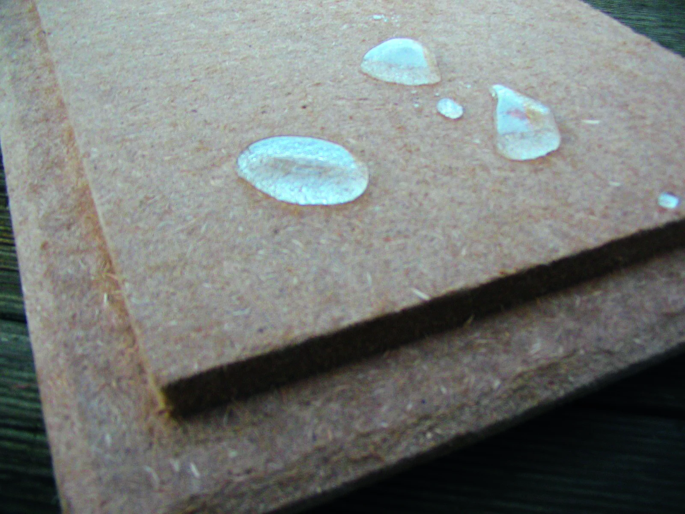
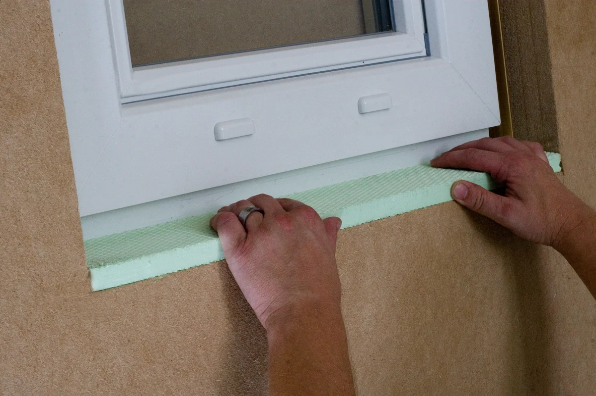

DŘEVOVLÁKNO PRO VAŠI STAVBU
Dřevovláknité
izolace pro
váš dům.
Vyberte podle použití a poptejte materiál pro svou stavbu.

Konkrétní možnosti použití.Ilustrační materiál INTHERMO
ZAČNĚTE SVOU STAVBOU
Kam izolace patří?
Od fasády až po prostor mezi krokvemi.
Vyberte část domu, kterou řešíte.
Fasáda pod omítku ↗
Desky jako podklad pro omítku. Výběr závisí i na tom, zda jde o zdivo nebo dřevěný rám.
WALL 140 · WALL 180 · INTHERMO Compact 02 / FASÁDA S OBKLADEMProvětrávaná fasáda ↗
Izolace za vnějším obkladem. Konkrétní skladbu a ochrannou fólii je třeba zvolit podle podkladů.
MULTITHERM 140 03 / STŘECHANad a mezi krokvemi ↗
Pevné desky nad krokvemi a pružná výplň mezi nimi mají odlišné použití.
MULTITHERM 140 · FLEX 50 · INTHERMO 04 / RÁMOVÉ STĚNYVýplň konstrukcí ↗
Pružná izolace do prostoru v dřevěných rámových stěnách; další použití podle konkrétního výrobku.
FLEX 50 · HFD-GefachdämmungIlustrace ukazují pouze orientační princip. Výběr materiálu nenahrazuje návrh celé stavební konstrukce.
VYBRANÝ SORTIMENT
Materiál pro váš projekt.
best wood SCHNEIDER & INTHERMO
Cenu a dostupnost ověříme při poptávce.
U desek INTHERMO zatím potvrzujeme nabízenou řadu. Varianta 80 mm: (doplnit). Všechny uvedené varianty nejsou automaticky vhodné pro každou konstrukci.

Montážní detail z podkladů INTHERMONEMUSÍTE ZNÁT VŠECHNY PARAMETRY
Víte, co stavíte.
S výběrem se ozvěte.
Popište, kterou část domu chcete zateplit. Pokud si nejste jistí výrobkem nebo tloušťkou, v poptávce zvolte „Potřebuji poradit“.
Požádat o doporučeníPro novostavby i rekonstrukce. Konkrétní použití vždy podle dokumentace výrobku a návrhu stavby.
JSME TU PRO VAŠI STAVBU
Od výběru
k poptávce.
Pošlete nám svůj záměr nebo seznam materiálu. Připravíme nabídku podle poptávky včetně dopravy do místa závozu.
izotem@izotem.cz ↗Sklad a osobní odběr
Bežerovice 9, 391 65 Bechyně
Pondělí–pátek 7:00–16:00
Sobota 8:00–11:00
NEZÁVAZNÁ POPTÁVKA
Co pro vás můžeme připravit?
Vyplňte, co už víte. Zbytek můžeme upřesnit společně.